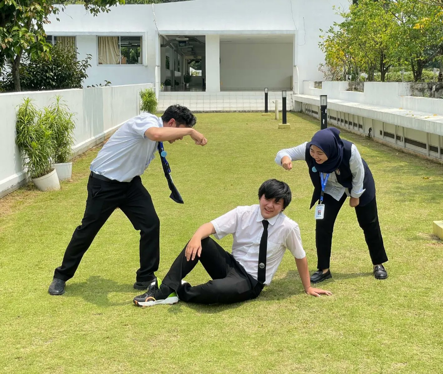
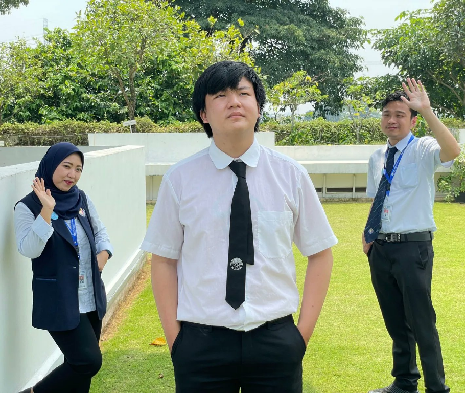

PERSONAL · HIGH SCHOOL
My Part-Time Work Mentor in High School.
Memories with the mentor who guided me during my part-time job in vocational high school.



These photos remind me of my vocational high school days, when I worked part-time and received guidance from some wonderful people at work.
Thank you for guiding and supporting me. I will always remember the experience and the time we shared.
— Yavin